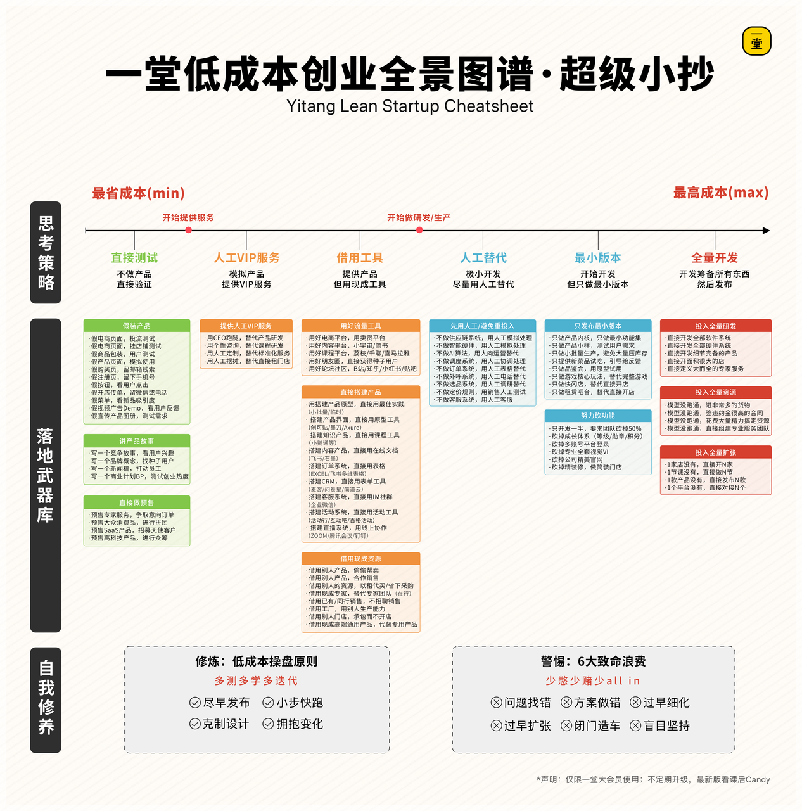
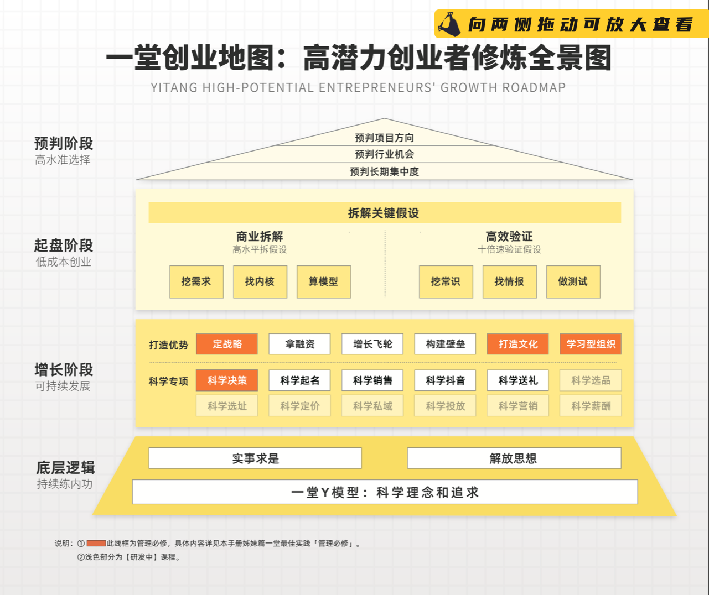
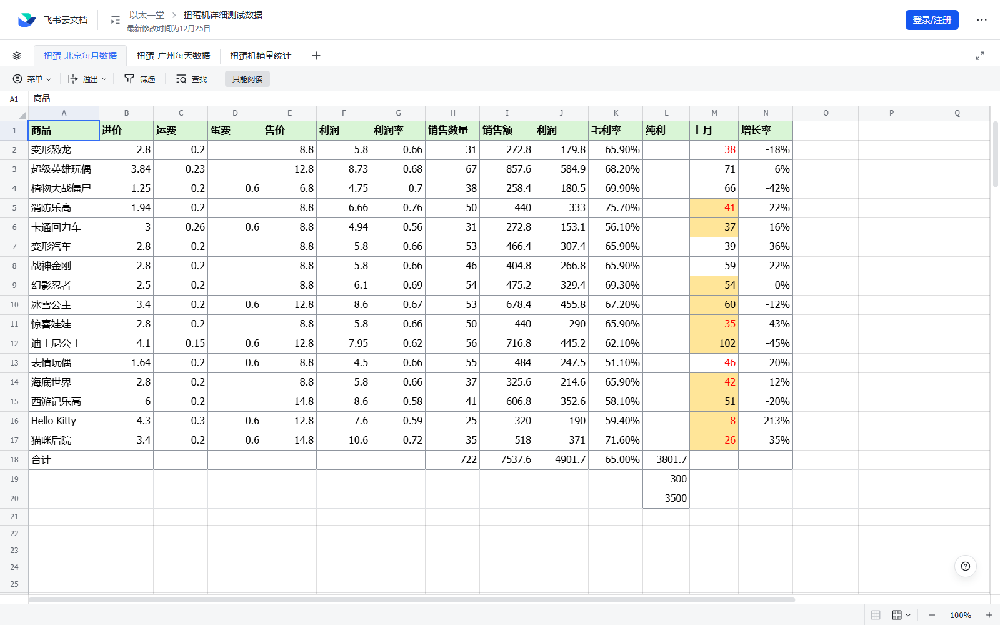
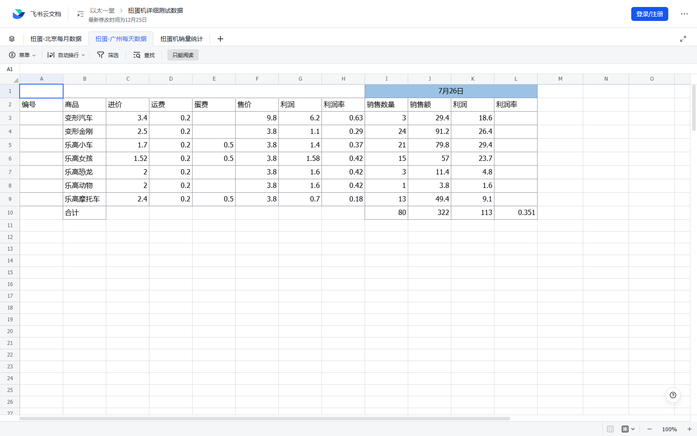

01 / STATUS
提交与学习状态
作业已经正式提交并解锁 Candy；答案未公开。除这次必需的作业提交外，没有把学习笔记写回一堂个人界面。
所有“已学习”状态都有页面正文、结构化摘要或表格截图作为证据；课程数字按“课程自报”处理，不替代外部审计。
02 / CANVAS
三个业务的五步画布
五步法把用户问题、产品内核、赚钱单位、增长质量和壁垒分开，防止用一处成功替代整个业务成立。
| 业务 | 需求 | 产品内核 | 单元模型 | 增长指标 | 壁垒 |
|---|---|---|---|---|---|
| 内衣洗衣液 | 20-35 岁女性；手洗；血渍与异味 | 去血渍、长留香 | 单订单、单用户 | 年营收 4000 万并盈利 | 品牌强；迁移成本中 |
| 扭蛋机 | 儿童使用、家长付款；经过与等待场景 | 易用、好玩、平价 | 订单、柜、点位、商圈、城市、配送 | 年增 500 点位、点位毛利率 >20%、月营收 >100 万 | IP 高；独家点位中；规模效应弱 |
| 动漫电商 | 重度日漫用户；稀缺、正品与预算约束 | 正品、稀缺、低价 | 订单、用户、活动、展会 | 月增 3000、转化 20%、月营收 200 万 | 独家授权强；成本中；规模效应弱 |
导师判断：画布不应只有答案，还应增加证据等级、反证阈值、数据日期与责任人。否则它仍然只是结构化愿望。
03 / Q&A
答疑信的八条实战边界
最有价值的不是具体话术，而是哪些问题可以靠调研、哪些必须靠行为，以及低成本测试什么时候会失真。
难关来自五步法
“有人要、卖什么、能否卖动、能否赚钱、能否卖爆”分属不同关口，不能相互替代。
实验没有固定段位
直接测试、人工服务、借工具、人工替代、最小版本和全量开发都只是手段，选择取决于关键风险。
先分产品风险与资源风险
产品更好就找种子客户共创；持续拿单依赖壁垒，就访谈专家、竞品和价值链角色，再用采购行为复核。
性格不是创业结论
内向或外向不是能力高低。要根据取证、销售和组织协同的任务切换行为。
按阶段调用能力
预判选方向，起盘拆假设，增长建组织；底层是实事求是、解放思想和知行合一。
只替代无需验证的部分
假包装可测试购买感知，但不能证明长期效果、安全与稳定性。必须写清替代项与真实项。
先做出可复用单店模型
关系门店用于起步，销量、补货、客诉和利润记录才支持进入连锁；代理不会消除准入与动销门槛。
用户错配会浪费网络效应
手办用户与周边付费用户不一致，使早期资产无法顺延。使用者、贡献者和付款者必须分开验证。


04 / DATA
扭蛋机：目标、动作与利润不混写
运营记录和表格共同说明：销售上升不等于因果已识别，单点毛利也不等于复制成立。
两周测试记录
8 台机器，初始 10 元/次，目标 40 枚/天。后续同时调整到 5 元、增加展示、音乐、联动优惠券和完整值守日。
- 5 日销量：12、9、12、26、36，共 95，日均 19。
- 小车 27 枚领先，儿童品类强于多数动漫 IP。
- 多个变量同时变化，因此后两日增长不能被归因给单一动作。
北京月度 SKU
722合计销量
7,537.6销售额
4,901.7毛利
65%表内毛利率
表内按 SKU 记录进价、运费、蛋壳、售价、销量、毛利和上月变化，适合做补货与淘汰决策。

广州单日账本
807 月 26 日销量
322销售额
113利润
35.1%利润率
销量主要来自变形金刚 24、乐高小车 21、乐高女孩 15 和乐高摩托车 13。SKU 贡献高度不均，不能平均补货。

销售额与复制模型
3 台与 6 台机器的全年销售额估算约 4.431 万与 6.33 万；扣除 40% 成本、地租、人工和机器损耗后，估算利润约 5,170 与 7,215。
结论：机器数翻倍不带来利润线性翻倍，淡旺季、点位成本和运维约束会侵蚀规模收益。

05 / THROUGHPUT
动漫电商：吞吐量也是单位经济
库存电商的增长上限可能不是流量，而是拍照、录入、校对、上架、仓储和缺货同步。
| 环节 | 课程记录 | 经营含义 |
|---|---|---|
| 单件成本 | 合计 10.15 元；含进价、国际运费、捡货、分货、打包、快递、仓储和上架 | 毛利必须覆盖完整操作成本，不只看进销差 |
| 人工上架 | 约 6 分钟/件、2 元/件、60 件/人日 | 商品信息生产是可计价瓶颈 |
| 程序辅助 | 约 4 分钟/件、1.33 元/件、90 件/人日 | 自动化价值应以节省分钟与质量变化衡量 |
| 2 万件规模 | 约 222 人日、2.66 万元 | 单件小优化在大规模下形成现金与交付差异 |
| 漫展漏斗 | 经过约 1200、进店约 400、付款记录 72、销售 4335 元 | 流量、进店、付款和客单必须分别定义；记录另有 80 人口径需核对 |
| 线上计划 | 每天录入 3000 条、每周上架 1 万件、缺货率低于 1% | 增长目标要绑定供给吞吐、库存质量和责任人 |
06 / AI TRANSFER
给 AI 商业教练的五项升级
把课程从“知识解释器”升级为“证据与经营约束检查器”。
假设、证据等级、数据日期、反证阈值、责任人一起保存。
记录每个 AI 任务的人工分钟、重试、审核、异常和支持成本。
分别识别使用者、贡献者、付款者、预算拥有者和责任承担者。
除获客外，审计数据准备、推理、人工审核、集成、客服和合规容量。
一次只改一个主变量；无法控制时记录替代解释，不把相关性写成因果。